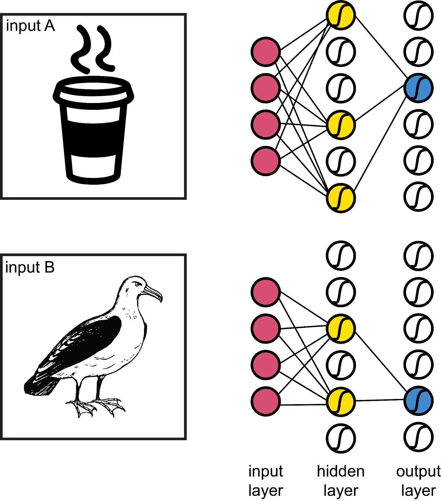
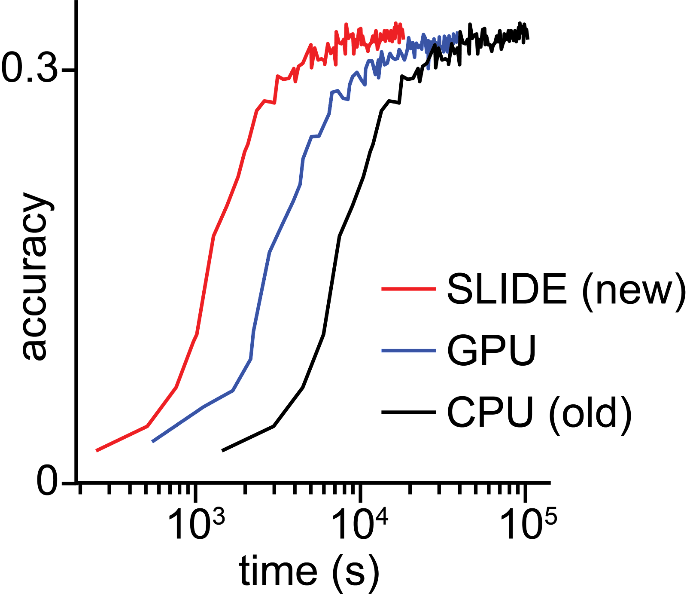

minimalpriora spinoff |
Updated | ||
|---|---|---|---|
| Author | Jan Kirchner | ||
Meta: As long-term readers know,sometimes I switch into my academic mode and write semi-formal posts analyzing a topic. This is such a post, summarizing some of the things I learned after doing a deep dive into a subfield of AI Safety.
Over the coming decades, we might see machines that are as smart or smarter than humans. It is possible that these smarter-than-human machines will be built to work on our behalf and to greatly increase human welfare, such as by curing diseases and expanding economic opportunity. But simultaneously there are high risks if we build these machines with goals that are too narrow and that don’t represent our broader values. The field concerned with working towards positively shaping artificial intelligence (AI) is called AI Safety (Wiblin, 2017).
There are two complementary avenues for ensuring that humanity successfully navigates the transition into a world with advanced AI systems: Technical AI Safety and AI Governance. While Technical AI Safety is concerned with developing algorithms and frameworks for making safe AI possible , AI governance is concerned with how institutions make decisions about AI and with ensuring that AI is deployed safely (Dafoe 2020).
Compute Governance is the subfield of AI Governance concerned with controlling and governing access to computational resources (Heim 2021; Anderljung and Carlier 2021). Among different candidates for effective AI governance, Compute Governance stands out as particularly promising due to two factors:
In this post, I will explore possible implications on Compute Governance of a recently proposed technique for accelerating progress in AI research (Chen et al. 2019).
To properly contextualize the proposed technique, I will briefly summarize the state of Compute Governance. A series of reports from the Center for Security and Emerging Technology (CSET) examines the supply chain for computing resources (Khan et al.,2021). In particular, the reports
highlight governable hardware chokepoints (Flynn and Khan, 2020),
explore international differences in production capabilities (Khan 2019;Hunt, Khna, Peterson, 2021),
and outline concrete policy interventions for avoiding dangerous multipolar race dynamics (Khan, 2020;Khan, 2021).
Results from this research have been presented before the U.S. Senate Foreign Relations Committee (Khan March 2021) and have received substantial media attention (PR1-PR10).
However, existing proposals for effective Compute Governance consistently make one central, simplifying argument: that research in advanced AI requires leading-edge, AI-specialized hardware. AI-specialized hardware is “computer chips that not only pack the maximum number of transistors […] but also are tailor-made to efficiently perform specific calculations required by AI systems” (Khan April 2020). This AI-specialized hardware is up to a thousand times more efficient than traditional commodity hardware , translating into a technological advantage equivalent to ~20 years of Moore’s Law-driven improvements over CPUs. Consequently, commodity hardware is typically not the focus of analyses of the supply chain and proposed policy interventions.
While most cutting-edge research occurs on AI-specialized hardware (Amodei and Hernandez 2018), it is unclear whether this is necessary or merely convenient. Furthermore, recent progress in algorithmic efficiency (Ye et al. 2021; Hernandez and Brown 2020) casts doubt on whether access to AI-specialized hardware will continue to be the main factor driving performance gains.
Much of the performance advantage of AI-specialized hardware comes from sacrificing flexibility for efficiency (Heim 2021). In particular, as the pivotal operations of learning in deep networks are “embarrassingly parallel” operations (dense matrix multiplication), AI-specialized hardware sacrifices sequential processing speed for increased parallel processing bandwidth (Gupta 2020). Embracing this trade-off has been the primary driver behind the impressive increase in computational capabilities of AI-specialized hardware (Sato et al. 2017).
But what if this is wasteful? Intuitively, each input into an artificial neural network should only activate a tiny fraction of all units. The nonlinear activation function of individual units guarantees that a substantial portion of units in each layer will not be activated at all. Techniques that adaptively silence a large portion of all units (Ba and Frey, 2013) or promote winner-takes-all dynamics (Makhzani and Frey) can improve network performance. Interestingly, neural activity in the biological brain across different species and brain areas is sparse because only a handful of neurons activate in response to each stimulus (Olshausen and Field, 2004). We might thus expect that a substantial fraction of computations performed to determine the activation of units does not affect the network’s output.
An illustration of sparse network activation. Due to the choice of ReLu activation function, a substantial number of units will be “silent” during a typical forward pass.
The traditional formulation of a deep network’s inference and learning operations does not take this sparsity into account. Even though only a small portion of units might activate for each input, the connections between all units of an artificial network update in response. Especially in the case of large networks with 100s of millions, billions, or even trillions of parameters, disregarding sparsity can be extremely costly.
Researchers from the Shrivastava lab present a novel approach (Chen et al. 2019). Rather than computing activation and weight changes for all units in the network, they employ a technique called Locality Sensitive Hashing to identify only those units likely to activate. While Locality Sensitive Hashing was conceived initially as a method for efficient search (Indyk and Motwani 1998), previous research from the Shrivastava lab demonstrates that we can also use it for computationally efficient sampling of candidates likely active units (Spring and Shrivastava). Importantly, reformulating the inference and learning operations of a deep network as a sampling problem allows them to sidestep the requirement for AI-specialized hardware and instead exploit the strengths of commodity hardware.
Accuracy on the Amazon 670k dataset from the extreme classification repository as a function of training time (log-scale) for three methods (red being the new method introduced by Chen et al.). Adapted from Chen et. al.
Indeed, their proposed implementation on commodity hardware, called “Sub-LInear Deep learning Engine” (SLIDE), outperforms AI-specialized hardware. Using SLIDE, Chen and colleagues can achieve 3.5 times faster training on commodity hardware (44 cores CPU) than AI-specialized hardware (Tesla V100). In collaboration with researchers from Intel, they were able to improve performance even further to a speedup of up to 7 times by exploiting advanced features of commodity hardware (Daghaghi et al., 2021). With the venture-funded startup ThirdAI, Shrivastava and colleagues are now developing an “algorithmic accelerator for training deep learning models that can achieve or even surpass GPU-level performance on commodity CPU hardware” (Bolt 2021). While the software is still closed alpha, a recent blog post announced the successful training of a 1.6 billion parameter model on CPUs. This research suggests that AI researchers’ heavy reliance on AI-specialized hardware might not be necessary and that commodity hardware can achieve equal or greater performance.
Before analyzing some of the caveats and weaknesses of the proposed approach, I want to take the published results at face value and mention implications. If broadly adopted, a shift away from AI-specialized hardware to commodity hardware would have significant implications for AI Safety in general and Compute Governance in particular.
Timeline speedup. A speedup of training by a factor of 7 (as suggested by Daghaghi et al. 2021) would translate into a shortening of AI timelines by at least 6-7 years (Cotra 2020). While commodity hardware is somewhat less affected by the current chip shortage, the proposed hardware configuration by Chen et al. (2019) is (surprisingly) not cheaper[1]. Beyond the training speedup, we should not expect sustained additional speedup of timelines due to price and availability.
[1]
They use a top-of-the-range CPU machine and compare it with a mid-range GPU machine.
Leveraging existing hardware.Existing supercomputers run on “commodity hardware that we might leverage for AI applications. Making the strong assumption that the software architecture carries over without a problem, the Fugaku supercomputer could replicate AlphaGo Zero in under a week.
Commodity hardware designers. While Nvidia and AMD dominate the design for AI-specialized hardware, designs for leading commodity hardware are instead dominated by Intel and AMD (Khan January 2021). As every system using AI-specialized hardware also contains commodity hardware, and as Intel is one of three remaining companies operating state-of-the-art fabs, Intel is a central actor in Compute Governance either way. Intel’s role might become central depending on the importance of commodity hardware as a driver for progress in AI research.
Secondary markets. There exists a much larger secondary market for used commodity hardware than for AI-specialized hardware. It is conceivable that bad actors can bypass existing policies restricting access to AI-specialized hardware by buying commodity hardware on the second market.
After presenting the argument for the use of commodity hardware in accelerating AI research, I now want to highlight that there are considerable limitations and reasons for doubting this outcome.
Outside view. Suppose the results by Chen et al. (2019) hold in full generality. In that case, they might represent a paradigm shift for AI research by making both classical gradient descent and AI-specialized hardware obsolete. While such paradigm shifts are not unprecedented, they are rare. This observation implies a low prior probability for success to any proposal with seemingly radical implications. Furthermore, while deep learning in research and industry already extensively uses CPUs in their usual function, the proposed method has not found widespread adoption (Mittal et al., 2021). The rapid adoption of f.e. the transformer in almost all areas of AI within three years (Wies et al. 2021) stands in stark contrast, and further decreases the likelihood that commodity hardware represents a paradigm shift for AI research.
Technical limitations. In the framework proposed by Chen et al. (2019), the choice of the exact Locality Sensitive Hashing function is left open and depends on the type of modeled data. Follow-up work (Chen et al. 2020) salvages this shortcoming while further complicating the method. Furthermore, the proposed technique requires that activity in the deep network is sparse, i.e. each input only activates a small number of units. However, different machine learning architectures exhibit differing degrees of sparsity (Loroch et al. 2018), so that this assumption does not hold in general.
Scalability. As discussed in the previous section, it is unclear whether the proposed technique would scale up naturally to extremely large computing systems like the Fugaku supercomputer. Avoiding diminishing (or even disappearing) returns when scaling up AI-specialized hardware to trillion parameter models is an active area of research (Rajbhandari et al. 2019; Shoeybi et al. 2020). Thus, while commodity hardware might be able to replace AI-specialized hardware in smaller computing systems, this translation might well break down once we attempt to scale up the systems.
Despite the limitations of the approach highlighted in the previous section, this analysis has uncovered a number of insights relevant to Compute Governance that apply more broadly.
Algorithmic and Hardware efficiency. As hardware appears much more governable than software, it is tempting to focus exclusively on controlling hardware and neglecting software. But as progress in AI results from both algorithmic and hardware efficiency increases (Hernandez and Brown 2020), any policy proposal for Compute Governance should carefully consider current developments in algorithmic efficiency and possible interactions between hardware and software.
Changes in hardware. It is not clear that future AI systems will rely on the AI-specialized hardware of the present. Policies seeking to govern the deployment and impact of AI in the mid- to long-term will have to take this possibility into account and monitor new developments in computer architectures (Hennessy and Patterson 2019).
Importance of commodity hardware. Even though leading AI research usually requires AI-specialized hardware, commodity hardware still plays a central supporting role (Mittal et al., 2021). Commodity hardware thus represents a potentially powerful additional lever for executing Compute Governance policies.